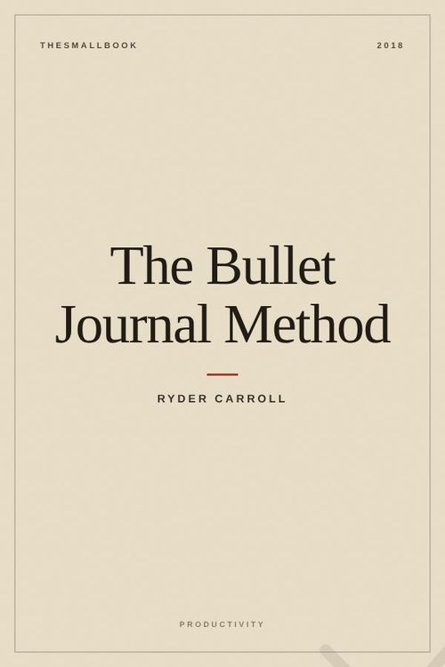

Library › Authors › Ryder Carroll
Books by Ryder Carroll
Ryder Carroll has one book in the library. Every book here is read down to the big idea, the lessons, the lines worth keeping and the actions worth taking. Start with the summary, then buy the full book if it earns a place on your shelf.

The Bullet Journal Method
2018 · 8 min · 6 lessons
One notebook, a rapid-logging system, and mindful reflection - the Bullet Journal helps you focus on what matters.
Ryder Carroll designed the Bullet Journal to solve a modern problem: scattered notes, apps and tasks that overwhelm instead of organize. The system is simple: a single notebook, rapid logging (short bullets for tasks, events and notes), collections (lists for projects), and the Index. Its power isn't the method - it's the reflection: monthly migration forces you to ask what matters and what to drop. It's mindfulness disguised as a to-do list.
Lessons in the summary
- Rapid Logging: Capture Fast, Think Later
- The Index and Collections
- The Monthly Log: Zoom Out
- Migration: The Mindful Purge
- Mindfulness Through a Notebook
- Start Small, Build the Habit
Lines worth keeping
- The Bullet Journal is a method of mindfulness disguised as a productivity system.
- It's not about being more productive - it's about doing the right things.
- We spend our days swimming in a sea of information, drowning in it. The Bullet Journal is a life raft.
Questions Ryder Carroll helps answer
Read nearby authors next
- Robin Sharma 5 books
- Cal Newport 4 books
- Daniel H. Pink 3 books
- Nir Eyal 3 books
- Atul Gawande 2 books
- Brian Tracy 2 books
- Johann Hari 2 books
- Josh Kaufman 2 books
Questions Ryder Carroll helps answer
Where should I start with Ryder Carroll? Start with The Bullet Journal Method: One notebook, a rapid-logging system, and mindful reflection - the Bullet Journal helps you focus on what matters.